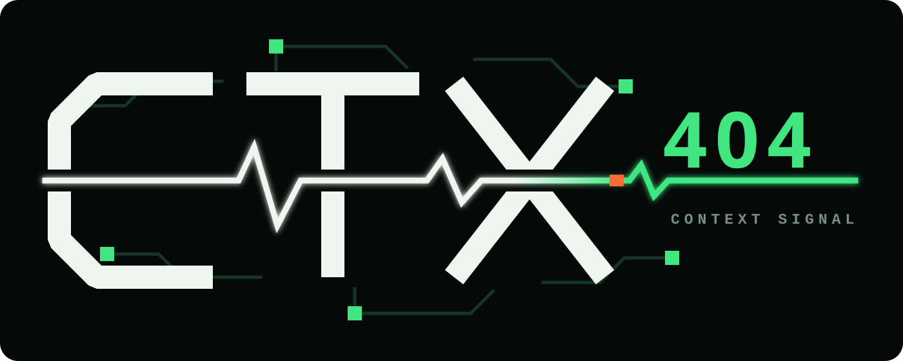

current.json
The smallest resumable state: status, last completion, next step and active topics.
$
CTX404 installs a compact, indexed and versionable context protocol inside a new repository, so future Claude Code chats can recover what matters without rereading everything.

The session ends. The context survives.
No magical memory. Magic is still in public beta.LIFECYCLE
CTX404 initializes Git and delegates Claude Code's native /init in an empty repository.
Governance, indexed JSON state, history, hooks, agents and deterministic helpers are written locally.
Claude refines scope and rules from your intent and verified repository evidence—not guesses.
The skill leaves. The repository maintains its own compact context across chats and machines.
ARCHITECTURE
The smallest resumable state: status, last completion, next step and active topics.
A compact map for finding relevant topics without loading the whole repository.
Detailed context loaded only when the current task needs it.
Append-only checkpoints that preserve verified changes without bloating startup context.
.claude/context/
├── current.json // resume first
├── index.json // route next
├── history.jsonl // audit when needed
└── topics/*.md // load selectivelyINSTALL
curl -fsSL https://raw.githubusercontent.com/claudneysessa/ctx404/main/install.sh | shHONEST LIMITS
$ git checkout -b your-signal
CTX404 is a public beta. Issues, compatibility reports and focused pull requests are welcome in English or Portuguese.